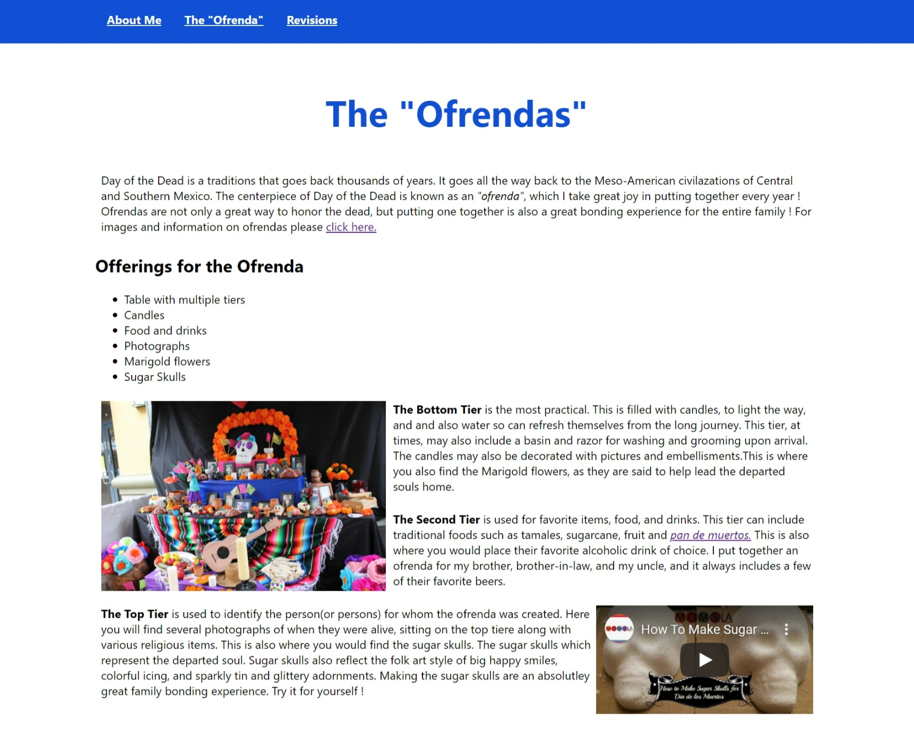
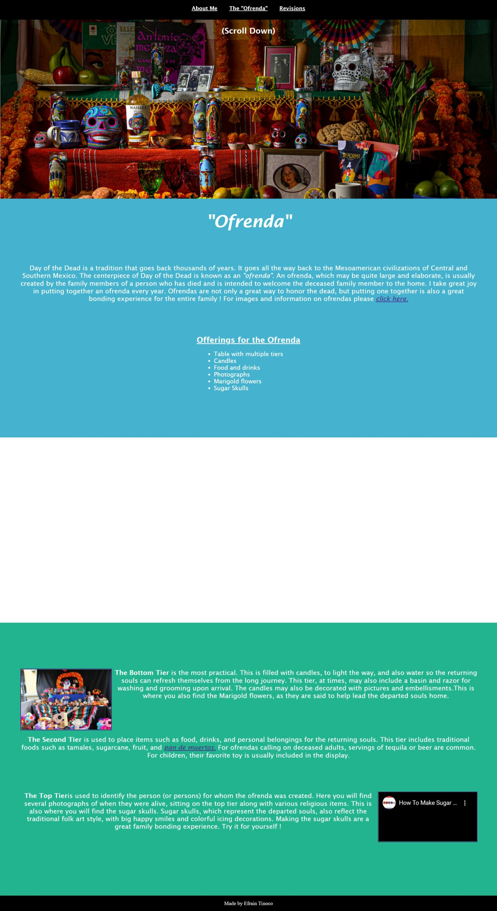

Revisions
Feedback recieved

For the feedback, I asked two of my teammates, Jose Gonzalez and Nicole Robinson, if they could review
the
first draft of my website and provide me feedback.
They are both also supervisors in the CSC Department at Ford Credit, and I have worked with them for over
15 years each. We have worked together on several
different projects, and we have always been able to provide each other open and honest feedback. To the
left you will see what my website looked prior to the revisions. They provided several suggestions,
which are listed below.
{kind=link}
Suggestions made
- Website looks plain and looks like a Word document
- Font was small and should be changed
- Space needed between text and images
- Navigation menu did not look good on the left side of page
 To the right, you will see what my website looks like now, after the feedback provided was implemented. The focal point of the feedback provided was that my site, although well done, looked plain and too much like a Word document. I ended up redoing almost the entire styling, and adding several different sections and background images to give it a more polished and professional look. I'm glad my peers provided me the feedback, because it helped me better my project and think outside the box. It also helped me learn a few things about HTML and CSS along the way. Below you will see a list of the revisions made to my page, which I believe made it better overall.
{kind=link}
Revisions made
- Added more color and styling to my page
- Added different sections and background images
- Changed font and made it bigger
- Added padding between text and images
- Centered navigation menu on page